Shadowsocks
A VPN encrypts what you send, but it does not necessarily hide that you are using a VPN. Plain WireGuard traffic is easy to recognize on the wire, which is why some networks can detect and block it. Shadowsocks is one way around this. It is an encrypted proxy protocol that wraps your traffic so that every packet looks like random bytes, with no fixed header for a firewall to match on.
The easiest way to try it is through Mullvad VPN, which can run its WireGuard tunnel inside Shadowsocks with a single setting. I wrote about setting up Mullvad VPN in a previous article. If you are interested, see the previous article.
In this article, I capture traffic with Wireshark and compare plain WireGuard with WireGuard over Shadowsocks, to see what actually changes on the wire.
What is Shadowsocks?
Shadowsocks is an open-source proxy protocol, first released in 2012 by a Chinese developer to get around the Great Firewall. It was designed with one goal: to be hard to detect and block.
Most protocols, including VPN protocols such as WireGuard and OpenVPN, are easy to identify. They begin with a handshake that has a recognizable shape, and their packets carry fixed fields in fixed places. A firewall does not need to decrypt anything to recognize them; it only needs to match those patterns. This technique is called deep packet inspection (DPI).
Shadowsocks avoids giving a firewall anything to match:
- No handshake. The client and the server share a password (a pre-shared key) in advance, so there is no negotiation on the wire. The first packet already carries data.
- Everything is encrypted, including the header. Each packet starts with a random salt, and the rest is encrypted with an AEAD cipher such as AES-256-GCM or ChaCha20-Poly1305. The salt is used to derive a fresh key, so no two packets begin with the same bytes.
- No fixed fields. Because the salt is random and the rest is ciphertext, every byte on the wire looks random. There is no magic number, version field or message type for a firewall to look for.
Shadowsocks itself is a proxy, not a VPN: it forwards your traffic to a destination of your choice, but it is not designed to replace a VPN's routing. Mullvad uses it as an outer wrapper. Your traffic is first encrypted by WireGuard as usual, then the WireGuard packet is encrypted again by Shadowsocks before it leaves your computer. Mullvad's server unwraps the Shadowsocks layer and hands the WireGuard packet to the WireGuard relay.
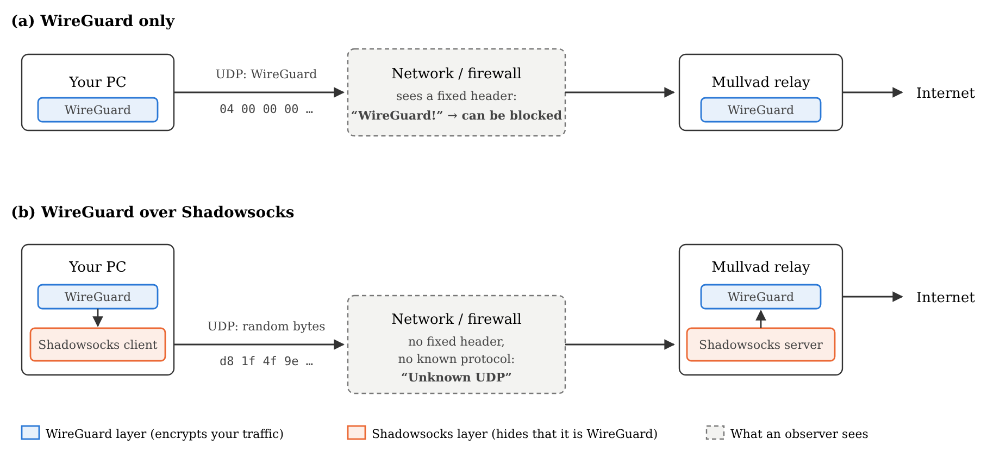
In short, WireGuard protects what you send, and Shadowsocks hides what kind of traffic it is.
Setup
Mullvad calls this feature anti-censorship. You can turn Shadowsocks on from the command line:
mullvad anti-censorship set mode shadowsocksmullvad status now lists Shadowsocks under Features.
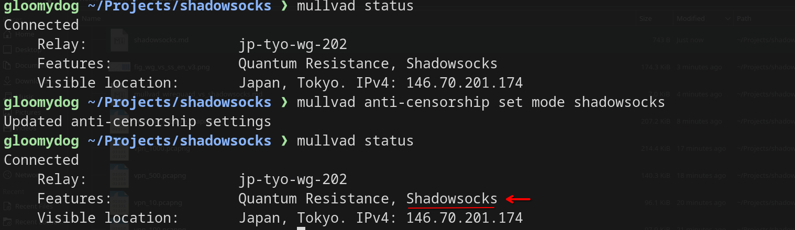
mullvad status before and
after enabling Shadowsocks.You can also check the current mode directly:
mullvad anti-censorship get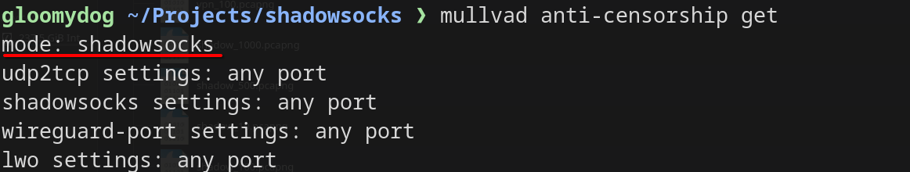
shadowsocks.To turn Shadowsocks off again:
mullvad anti-censorship set mode offCapturing with Wireshark
Test conditions
- Client: Linux laptop on Wi-Fi (
wlp1s0), Wireshark 4.7 - VPN: Mullvad, WireGuard, Tokyo relay
- Traffic:
ping -c 60 -s 100 1.1.1.1(60 ICMP echo requests, 100-byte payload, one per second) - Two captures of about 60 seconds each: one with Shadowsocks off, one with it on
Close your browser and other apps that use the network before capturing. Everything inside the VPN shares one encrypted flow, so background traffic cannot be filtered out later and will blur the results.
Plain WireGuard
First, I captured normal VPN traffic with Shadowsocks turned off.
Open Wireshark:
sudo wiresharkSelect the physical interface, here
wlp1s0. Do not pick the tunnel interface
wg0-mullvad. That interface shows your traffic after
decryption, which is not what an outside observer sees.
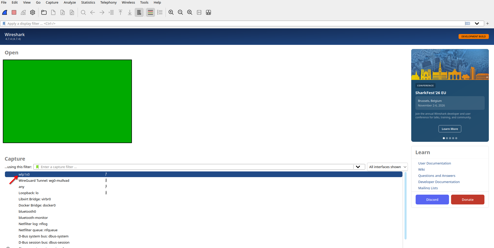
wlp1s0).Click the blue fin to start capturing, and the red square to stop.
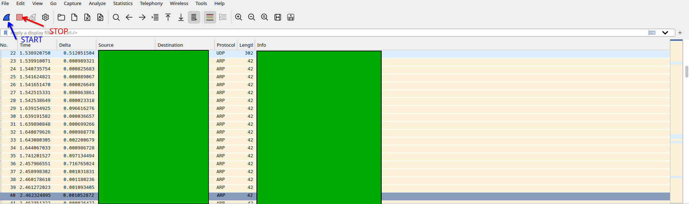
With the capture running, run ping in a terminal:
ping -c 60 -s 100 1.1.1.1When ping finishes (about 60 seconds), stop the capture. Then type a display filter for your Mullvad entry relay, the server your machine actually connects to. In my case:
ip.addr == 194.127.166.81Note that mullvad status shows your visible
(exit) IP address, which can differ from the entry relay. The easiest
way to find the entry address is Statistics > Conversations > UDP,
shown below. (My own IP address is masked in the screenshots.)
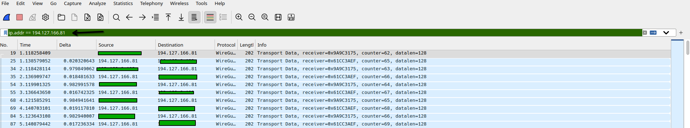
The Protocol column says WireGuard. The contents are encrypted, so nobody can read your data, but anyone watching the network can tell that you are using WireGuard. That is enough for a firewall to block it.
Open any packet to see why. Wireshark decodes the WireGuard header:
message type, receiver index and counter. The UDP payload always begins
with a fixed type field, 04 00 00 00 for transport data and
01 00 00 00 for a handshake initiation. That fixed pattern
is a reliable fingerprint.
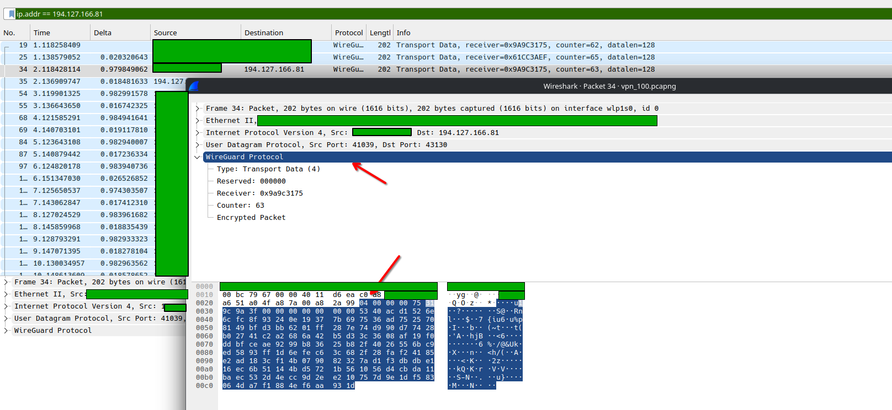
04 00 00 00 (Transport Data).Statistics > Protocol Hierarchy shows that all 120 packets (60 requests and 60 replies) were decoded as WireGuard Protocol.
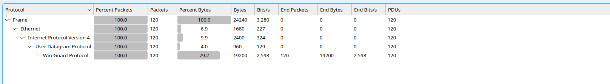
Statistics > Packet Lengths (with the same display filter) shows that every packet was exactly 202 bytes.
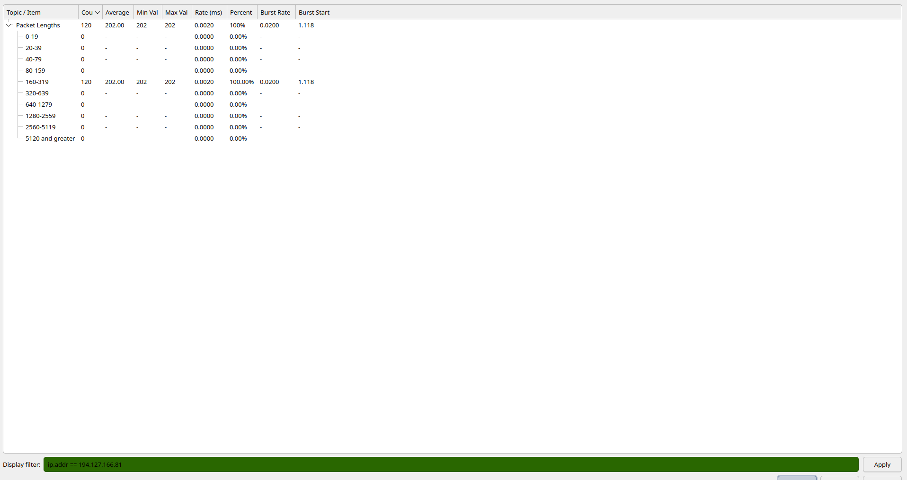
Statistics > Conversations > UDP shows a
single flow between my machine and the relay
194.127.166.81, port 43130.
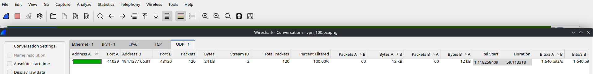
WireGuard over Shadowsocks
Next, I turned Shadowsocks on and repeated the same procedure.
After switching modes, wait a minute or two before you start capturing. For a short time the old relay may keep sending WireGuard packets to your machine (one direction only, which your client ignores). These are leftovers from the old session, not a leak, but they will confuse the results.
With Shadowsocks on, Mullvad connected through a different entry
relay, 138.199.21.239, so the display filter changes
accordingly:
ip.addr == 138.199.21.239The Protocol column now says plain UDP instead of WireGuard. Wireshark can no longer identify the protocol. This shows that Shadowsocks hides which VPN protocol you are using.
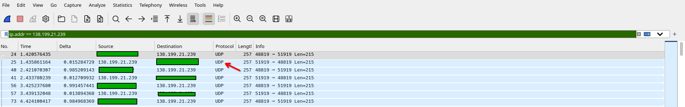
The payload is also different. It no longer begins with
04 00 00 00, and Wireshark shows it only as raw Data. The
first bytes were different in every one of the 123 packets, and the
payload looks statistically random (about 8 bits of entropy per
byte).
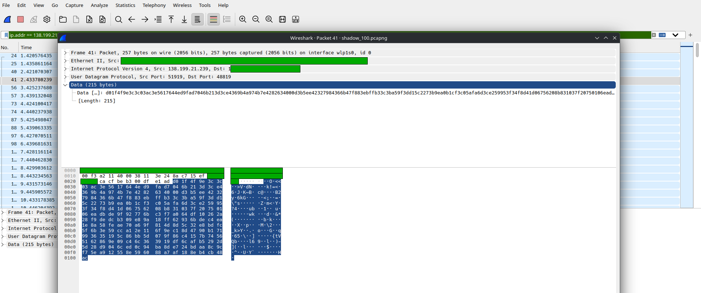
In Protocol Hierarchy, the top layer is now Data instead of WireGuard Protocol.
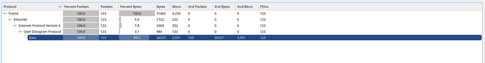
In Packet Lengths, the ping packets are now 257 bytes, 55 bytes more than before. (The three other packets, of 129, 189 and 245 bytes, are not ping traffic.)
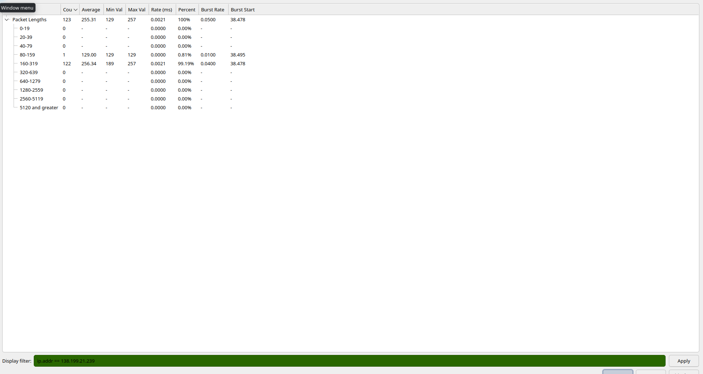
In Conversations, there is again a single UDP flow, but to a
different address and port: 138.199.21.239, port 51919.
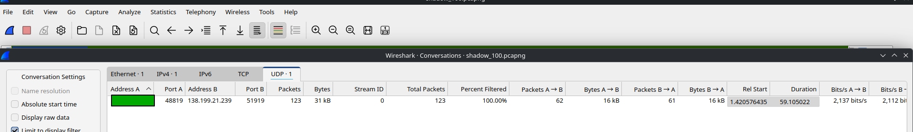
How much overhead does Shadowsocks add?
To check whether the extra 55 bytes depends on packet size, I
repeated both captures with four ping sizes (-s 10,
100, 500 and 1000), 60 seconds
each.
ping -s |
WireGuard only | WireGuard + Shadowsocks | Difference |
|---|---|---|---|
| 10 | 122 B | 177 B | +55 B |
| 100 | 202 B | 257 B | +55 B |
| 500 | 602 B | 657 B | +55 B |
| 1000 | 1114 B | 1169 B | +55 B |
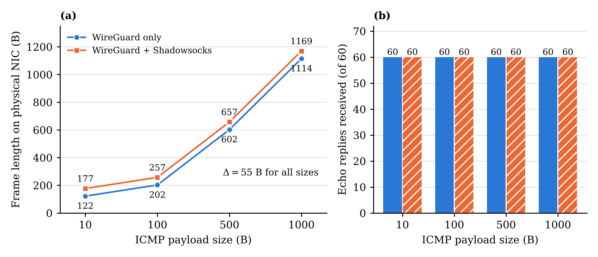
The difference is exactly 55 bytes at every size, so Shadowsocks adds a fixed cost to each packet, not a cost proportional to the data. All 60 echo requests received replies in every condition.
The 55 bytes match the Shadowsocks UDP packet format. Each UDP packet is laid out as a random salt, then the encrypted contents, then an authentication tag. The encrypted contents are a destination address followed by the data, which here is the whole WireGuard packet. Assuming a 256-bit cipher (32-byte salt) and an IPv4 destination (7 bytes: a 1-byte type, a 4-byte address and a 2-byte port), the overhead is 32 + 7 + 16 = 55 bytes, exactly what the captures show.
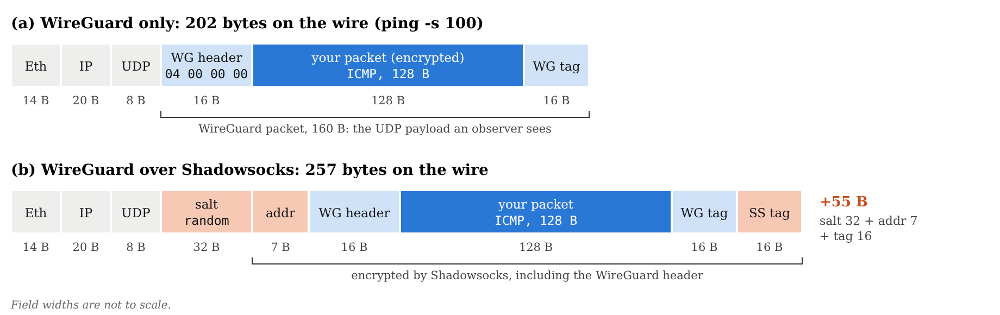
ping -s 100. Shadowsocks wraps the entire WireGuard packet,
including the 04 00 00 00 header that identifies
it.This layout also explains why Wireshark loses track of the protocol. The WireGuard header is still there, but it now sits inside the Shadowsocks ciphertext, and the first bytes on the wire are the random salt.
The WireGuard-only numbers follow a simple formula. A frame is 14 bytes of Ethernet, 20 of IP, 8 of UDP, 16 of WireGuard header, the inner packet padded to a multiple of 16 bytes, and a 16-byte authentication tag. That padding is why the 10-byte ping (a 38-byte inner packet, padded to 48) produces a 122-byte frame.
Summary
| WireGuard only | WireGuard + Shadowsocks | |
|---|---|---|
| Wireshark Protocol column | WireGuard | UDP |
| Protocol Hierarchy | UDP > WireGuard Protocol | UDP > Data |
| First 4 bytes of payload | Always 04 00 00 00 (data) or 01 00 00 00
(handshake) |
Different in every packet |
| Entry relay (this test) | 194.127.166.81:43130 |
138.199.21.239:51919 |
Frame length, ping -s 100 |
202 B | 257 B |
| Overhead per packet | n/a | +55 B, constant |
Shadowsocks does what it promises at the protocol level. Plain WireGuard is easy to identify from its fixed header, while the Shadowsocks-wrapped traffic is just UDP carrying random-looking bytes. The cost is a small, constant 55 bytes per packet.
It is not invisible, though. Packet sizes and timing are still visible. A determined observer using traffic analysis could still notice patterns. Shadowsocks hides what protocol you use, not that you are sending traffic.
References
- Shadowsocks, AEAD ciphers and packet format: https://shadowsocks.org/doc/aead.html
- WireGuard protocol and message formats: https://www.wireguard.com/protocol/